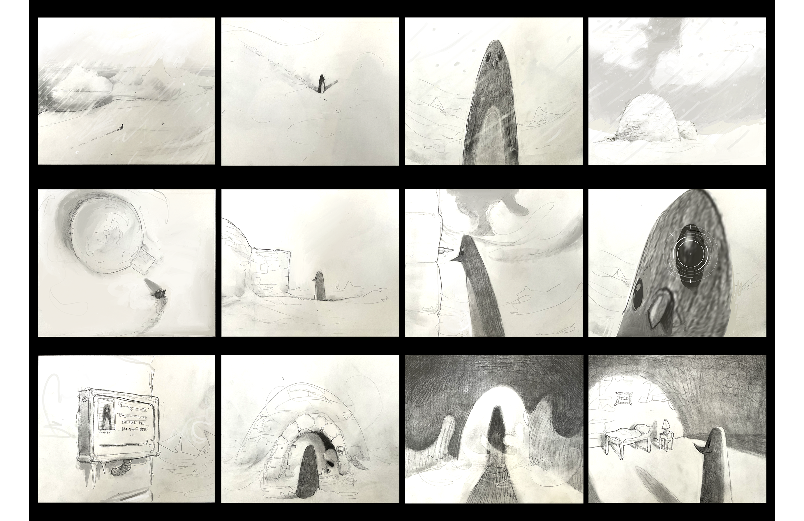
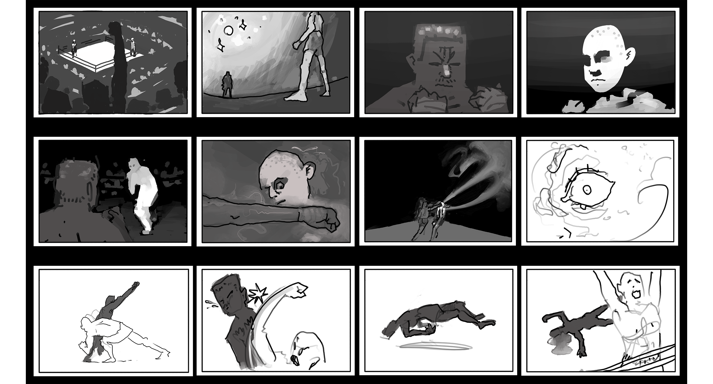
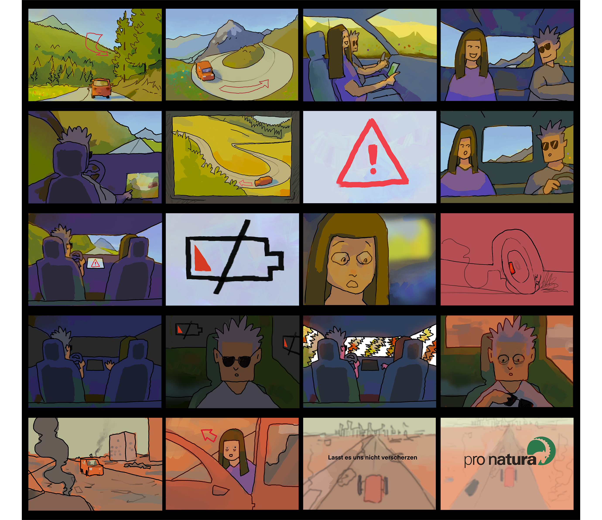

Im Rahmen eines Moduls, angeleitet von Matthias Gnehm, enstanden verschiedene Storyboards.
Im ersten Storyboard; Ein Pinguin läuft durch die weite Arktis. Was sucht er?

Die Darstellung eines Boxkampfes.

Ein Fake-Auftrag für die pro natura. Zwei Menschen sind im Elektro-Auto unterwegs in einer idyllischen Berglandschaft, doch der Schein trügt.
